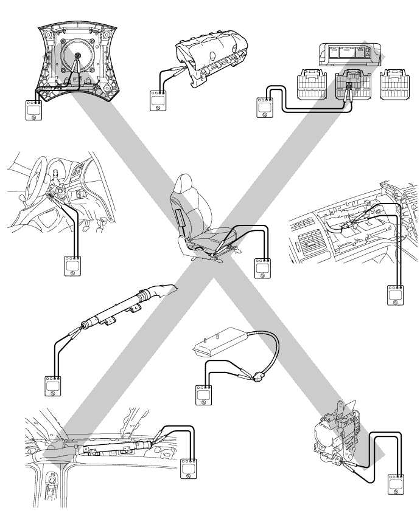

Use a Toyota electrical tester for electrical inspections.
Follow the instructions on the caution labels attached around the system.
Never disassemble.
If a part has been dropped, or has cracks, dents, chips or other deformation, replace it with a new genuine part.
Never use airbag and pretensioner parts from another vehicle; always install new parts when replacing.
Do not expose directly to high heat or flames.
Even if the airbag and pretensioner parts did not activate in a collision, perform an inspection using the diagnostic system.
Do not allow grease, cleaning agents, oil, water, etc. to adhere. If any adheres, immediately wipe it off with a dry cloth or equivalent.
Store and handle in a place free from high temperatures [ambient temperature of 93°C or higher for airbags (80°C or higher for pretensioners)] and high humidity, and not easily affected by electrical noise.
When scrapping a vehicle or disposing of a single part, always deploy it using SST.
- □ HINT □
- Horn Button Assembly Disposal (see
 )
)
- Instrument Panel Passenger Airbag Assembly Disposal (see)
- Curtain Shield Airbag Disposal (see)
- Front Seat Airbag Assembly Disposal (see)
- Instrument Panel Lower Airbag No.1 Disposal (see)
- Front Seat Outer Belt Assembly RH Disposal (see)
Never measure the resistance of airbag and pretensioner parts.

- ■ WARNING ■
- The tester current may cause the airbag or pretensioner to deploy, which is very dangerous.